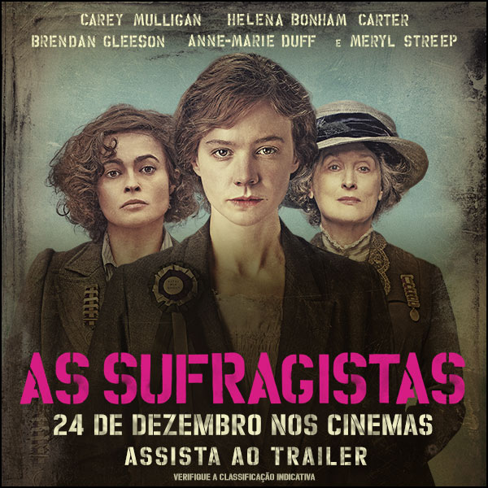
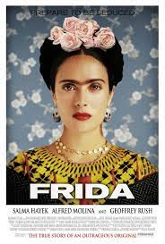

As Sufragistas

O início da luta do movimento feminista e os métodos incomuns de batalha. A história das mulheres que
enfrentaram seus limites na luta por igualdade e
pelo direito de voto. Elas resistiram à opressão de forma passiva, mas, a partir do momento em que começaram a
sofrer uma crescente agressão da polícia,
decidiram se rebelar publicamente.
Antonia: Uma Sinfonia

A vida de Antonia Brico que, na Nova Iorque de 1930, tornou-se a primeira mulher a conduzir, com sucesso, uma
orquestra. Ela ousou seguir o sonho de se tornar
uma maestrina, embora ninguém acreditasse ser possível.
Frida

A história das dores e da arte de um dos nomes de mais impacto no século 20, a mexicana Frida Kahlo.